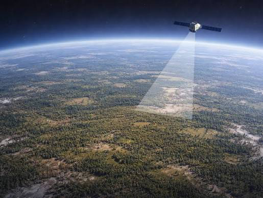

Kurinda follows environmental change across connected study areas, pairing observed evidence with locally useful decisions to understand the conditions that lead to the propagation of flooding and landslides.
Catchments, wetlands, fields, and settlements are monitored together, because changes move across boundaries. Human driven environmental change, including deforestation, mining and urbanisation are tracked through the latest satellite data to process its impact on the natural landscape and the landslide risk on vulnerable communities.

📍 Defined study zonesTechnical notes, conference abstracts, publications and further details on the core areas of the Kurinda Project.
Indicators of hydrology, vegetation and land-surface change using satellite data.
→Local readings enable the research system to include rapid feedback loops from live data.
→A machine learning model integrates the EO and ground sensor data to produce landslide and flood risk analysis and mapping.
→Kurinda began with the aim to integrate a distributed monitoring and early warning system with Earth Observation data and low-cost ground-based sensors measuring soil moisture, ground movement and temperature. Such instruments can be integrated into solar powered devices which collect and transmit data, helping to build a network of sensors which can contribute to improved climate models while also warning communities about hazardous conditions developing nearby.